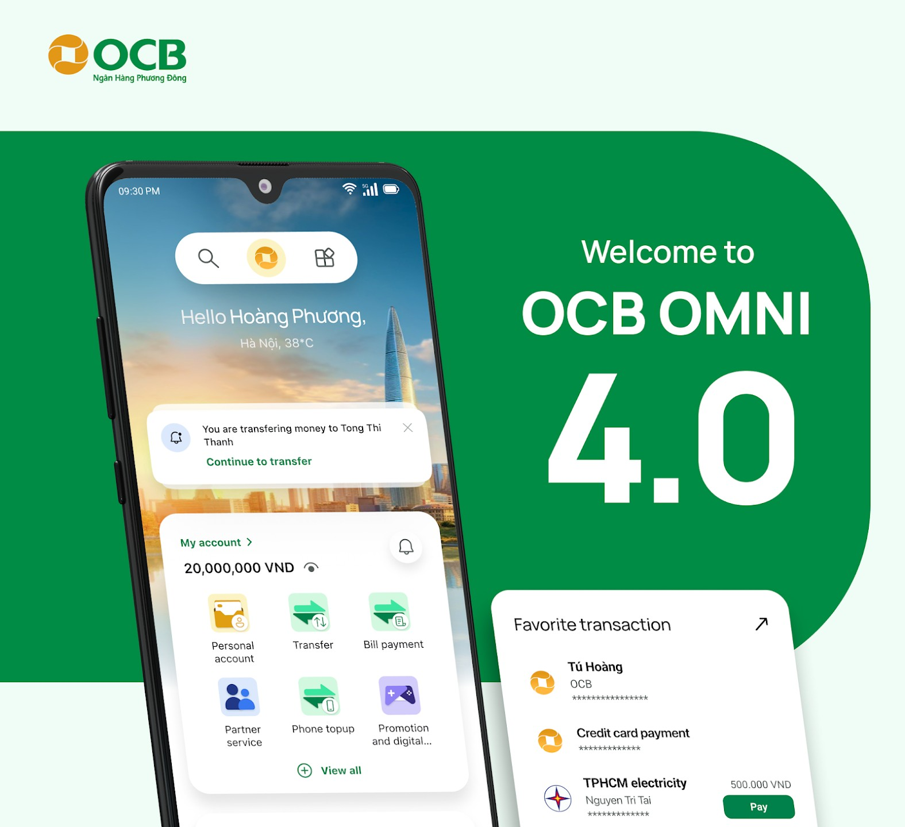

<div id="ajax-page" class="ajax-page-content">
    <div class="ajax-page-wrapper">
        <div class="ajax-page-nav">
            <div class="nav-item ajax-page-prev-next">
                <a class="ajax-page-load" href="src/portfolio-sb.html"
                ><i class="lnr lnr-chevron-left"></i
                ></a>
                <a class="ajax-page-load" href="src/portfolio-digital.html"
                ><i class="lnr lnr-chevron-right"></i
                ></a>
            </div>
            <div class="nav-item ajax-page-close-button">
                <a id="ajax-page-close-button" href="#"
                ><i class="lnr lnr-cross"></i
                ></a>
            </div>
        </div>

        <div class="ajax-page-title">
            <h1>OCB OMNI 4.0</h1>
        </div>

        <div class="row">
            <div class="col-sm-8 col-md-8 portfolio-block">
                <div class="owl-carousel portfolio-page-carousel">
                    <div class="item">
                        
                    </div>
                    <div class="item">
                        
                    </div>
                    <div class="item">
                        
                    </div>
                    <div class="item">
                        
                    </div>
                    <div class="item">
                        
                    </div>
                    <div class="item">
                        
                    </div>
                </div>
                <script type="text/javascript">
                    jQuery(document).ready(function ($) {
                        $(".portfolio-page-carousel").imagesLoaded(function () {
                            $(".portfolio-page-carousel").owlCarousel({
                                smartSpeed: 1200,
                                items: 1,
                                loop: true,
                                dots: true,
                                nav: true,
                                navText: false,
                                margin: 10,
                                autoHeight: true,
                            });
                        });
                    });
                </script>
            </div>

            <div class="col-sm-4 col-md-4 portfolio-block">
                <!-- Project Description -->
                <div class="project-description">
                    <div class="block-title">
                        <h3>Description</h3>
                    </div>

                    <p class="text-justify">
                        Digital bank of the new generation, OCB OMNI 4.0 of Orient Commercial Joint Stock Bank (OCB)
                        with a variety of financial service, products and utilities has been optimized in a simple but
                        modern, effective way in order to personalize the experience of each customer, ensuring fast
                        24/7, safe, secure and convenient transactions.
                    </p>
<!--                    <p>Team Size: 11</p>-->
                    <p>Position: Senior Software Engineer</p>
                    <!-- /Project Description -->

                    <!-- Responsibilities -->
                    <div class="tags-block">
                        <div class="block-title">
                            <h3>Responsibilities</h3>
                        </div>
                        <ul class="project-general-info">
                            <li>
                                <p><i class="fa fa-tasks"></i> Development</p>
                                <p><i class="fa fa-tasks"></i> Analyze and propose technical solutions</p>
                                <p><i class="fa fa-tasks"></i> Bug fixing</p>
                                <p><i class="fa fa-tasks"></i> Code review and optimization</p>
                                <p><i class="fa fa-tasks"></i> Shared knowledge and assisted junior teammates</p>
                            </li>
                        </ul>
                    </div>
                    <!-- /Responsibilities -->

                    <!-- Technology -->
                    <div class="tags-block">
                        <div class="block-title">
                            <h3>Technologies, Platform and tool used</h3>
                        </div>
                        <ul class="tags">
                            <li><a>Java</a></li>
                            <li><a>Spring boot</a></li>
                            <li><a>Backbase (Digital Banking Platform)</a></li>
                            <li><a>Keycloak</a></li>
                            <li><a>Kafka</a></li>
                            <li><a>Mysql</a></li>
                            <li><a>Redis</a></li>
                            <li><a>K8S</a></li>
                            <li><a>AWS</a></li>
                            <li><a>Kibana</a></li>
                            <li><a>Splunk</a></li>
                            <li><a>Rancher</a></li>
                            <li><a>Jenkins</a></li>
                            <li><a>Git</a></li>
                            <li><a>Jira</a></li>
                        </ul>
                    </div>

                    <!-- /Technology -->
                </div>
                <!-- Project Description -->
            </div>
        </div>
    </div>
</div>
